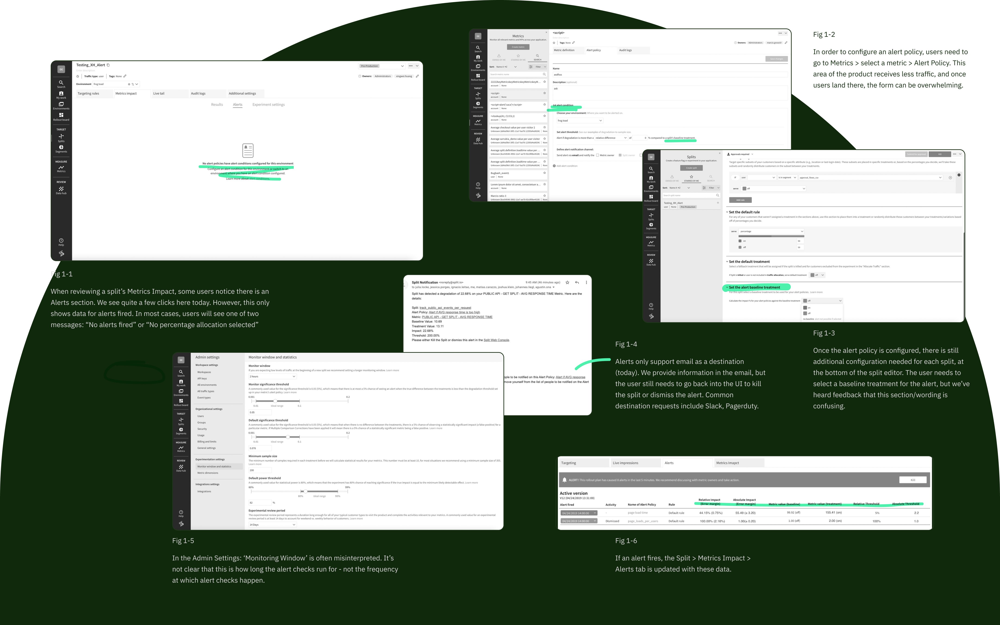
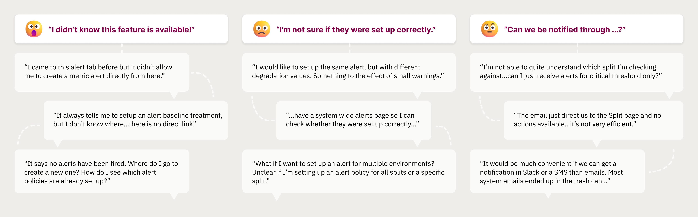
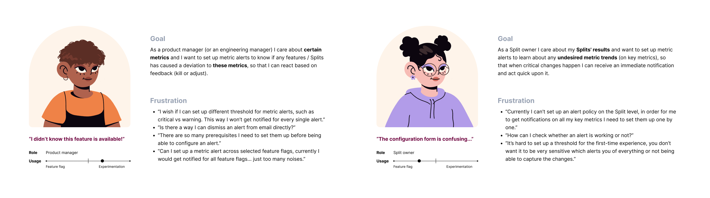
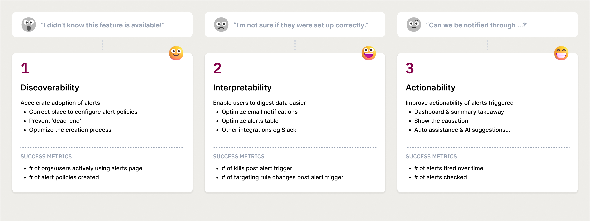
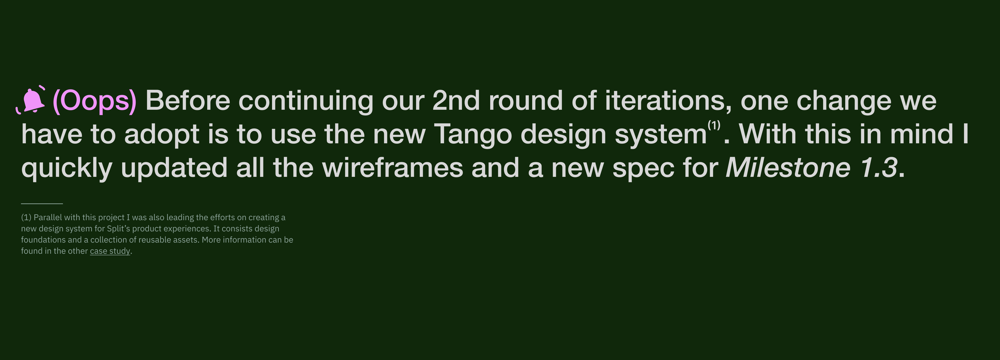
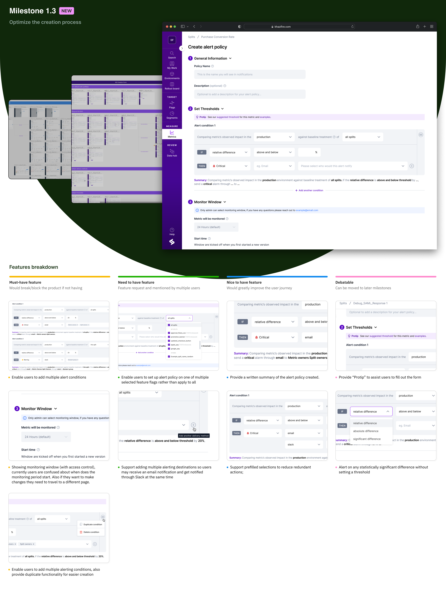
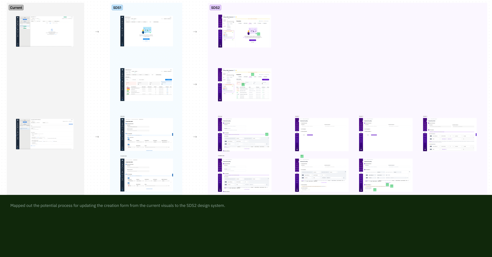
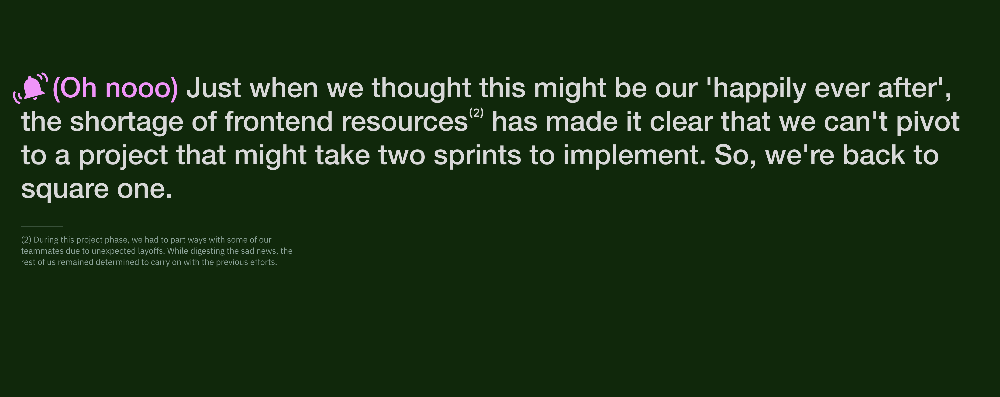
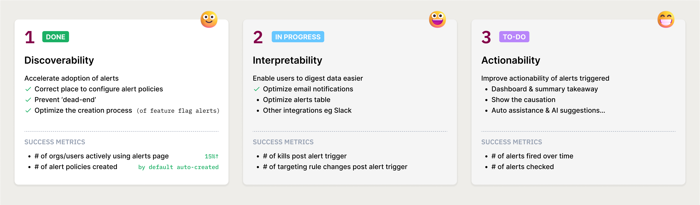

Project Type
User experience
Interaction design
Team
1 PM
1 Designer
2 Frontend engineers
2 Backend engineers
My Contribution
Research Analysis
User Interviews
Journey Mapping
Wireframing
Overview
To alert or not to alert, that is the question.
Split is a feature delivery platform which enables users to measure the impact of released features on their customer experience metrics. Causal alerting is a crucial differentiator for us in the market. However, as of July 2022 less than 10% of our users are actively using this main capability.
In my role as an embedded designer within the Measurement and Learning team, we embarked on a journey to investigate the current issues and explore ways to enhance the usability of the alerting feature.
Let’s dive in! Not to spoil anything but this story comes with a twist....
The way it was
How might we improve usability of our alerting feature
Through discussions with customers and internal teams, anecdotal feedback indicated that the perceived value of causal alerting resonates strongly, but a bumpy experience prevents customers from realizing the actual value. Below are some of our preliminary observations on the usability issues.

Foundational research
Zooming in
In order to get a clear picture of the current experience and to test our hypothesis. We conducted twelve user interviews, here are some pain points we've gathered. They can be mainly categorized into three buckets :

User personas
Key user segments -- who are we designing for
Then we created two general user personas that represent the key user segments we've identified: users who use Split as an experimentation tool, and others who use Split as a feature flagging tool.

Journey mapping
Current state VS new potential
After mapping out the user journey for both A and B personas, I realized that we are currently compelling them to use the same interface. Although the goals of these two personas overlap, they are not identical. Therefore, the current flow isn't efficient for either persona.

Task analysis
Efficiency through step by step
Then I took a closer look at the desired outcomes for each persona, examining the underlying goals driving these outcomes. To achieve these goals, users must complete multiple steps (individual tasks). Through task analysis, I identified numerous steps that can be simplified or replaced through automation.
In the image below, the chart on the left represents the current steps users need to go through. In comparison, the 'new-potential' chart contains fewer steps and requires less user input.
Measuring success
What success look like
Knowing where the problems are, we started to draft a three-step milestones plan.

Milestone One
Low-hanging fruits
As our first step to enhance the discoverability of the alerting feature, we added entry points to the creation flow to prevent 'dead-end' scenarios, significantly improving the click rate on the alert policy page.

However, help users to discover this functionality is just the first step. The most challenging aspect of optimizing the creation process is enhancing the configurability of alert policies and simplifying the setup of alerting conditions for users. With this goal in mind, I continued exploring various form designs...





Outcome
Post-launch feedback and next steps
After working closely with engineering team to bring designs to life, we launched Milestone One. The automation of feature flag alerts set up has significantly increased the click rate and the percentage of unique users who engaged with our alerts tab.
Meanwhile we have clear plans for improving and expanding the alerting features in the future. The next milestones include supporting intelligent alerting threshold setup, shortcuts, and metric dashboard view. We are currently working on implementing these suggestions to further improve the user experience.

Learnings
Looking forward
By listening to our users and making changes that provided real value to them, we created a dynamic alert creation process with improved capabilities. I grew as a designer and walked away with a few key takeaways:
-
Identifying and pursuing low-hanging fruit can be fruitful.
-
Thinking and designing with a systems mindset is a great way to achieve flexibility.
-
When the initial approach encounters challenges, it doesn't signify the end of the world.